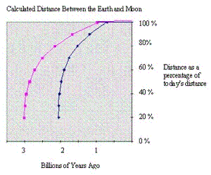

| Feature Article - February 2001 |
| by Do-While Jones |
In November, 1997, we wrote an essay about Our Escaping Moon. In it, we not only explained how the calculations show that the Moon could not have been orbiting the Earth for 4.6 billion years (which casts doubt upon the age of the Earth required by the theory of evolution), we also explained our calculations and invited rebuttal. In the following two years, we heard only one second-hand response, which we dealt with in November of 1999. Recently, we have had three responses. This gives us the welcomed opportunity to bring up the topic again.
The Earth and the Moon are coupled by gravitational forces. They are wound up like an old-fashioned watch mainspring, which is gradually unwinding. The Earth is spinning slower. The Moon is getting farther away and slowing down. Given enough time, they would eventually reach the point where the Earth is slowly turning, and the Moon is slowly orbiting the Earth with the same period. Then there would be no more tides, and the recession would stop.
In our original essay we tried to hide the equations as much as possible to avoid scaring away people who are afraid of math. Instead of writing "L = mvr" we said, "Angular momentum is defined to be mass times velocity times the radius." Instead of writing E = ½mv2, we wrote "Kinetic energy is half the mass times the velocity squared." Consequently, in response to our invitation to refute our calculations, Tim wrote,
| I would be happy to accept the invitation. However, since in fact you have not presented any calculations, I cannot demonstrate that they are wrong. |
So, apparently, stating equations in words and providing a table of values produced by those equations escapes the notice of people who are content to scan an essay quickly. Since our original approach didn't work, we will try another one.
To satisfy those people who want to see equations, and at the same time, not discourage those people who don't particularly care for math we put the details on another page that should be read only by those people who really want to get deep into the math. We will try to avoid math as much as possible in the body of the main essay.
The calculations plainly show that the Moon slows down as it gets farther away. As it slows down, it loses energy. This is important because David wrote to us saying,
| The scientist who wrote the Encyclopedia Britannica article on tidal friction wrote that, "The mutual attraction between the Moon and the material in the [tidal] bulge tends to accelerate the Moon in its orbit..." To accelerate in this case means to increase the velocity. Surely even do_while jones knows that a physical object such as the Moon can't simultaneously increase its velocity and decrease its energy. |
Do-While Jones does know that a constant mass object can't increase its velocity and decrease its energy. He also knows that as the Moon gets farther from the Earth, its velocity decreases with the square root of the distance. He also knows that "accelerate" means "to change speed or direction." It does not always mean "to speed up." It is unfortunate that the Encyclopedia Britannica article misled David on this point. The attraction between the Moon and the tidal bulge does change the Moon's velocity, but it doesn't increase it. Since David thinks we are wrong on this point, he rejects our entire argument.
Jack puts it this way:
| I believe that you and your critic are both in error. Your critic is right in pointing out that the Moon is actually gaining energy not losing it. Where he is wrong is in identifying the source of that energy gain. ... Bottom line -- I agree with your critic that the explanation you provide hurts your credibility. I have seen detailed analysis and don't recall now whether it helps or hurts your case but definitely recommend that you research the matter more thoroughly. |
But, as the equations show, the Moon really is losing kinetic energy. We aren't the only ones who think so.
|
Scientists agree that the orbiting moon dumps energy into the world's oceans. 1 In the June 15, Nature, Gary D. Egbert of Oregon State University in Corvallis and Richard D. Ray at NASA's Goddard Space Flight Center in Greenbelt, MD, report that about one terawatt (1012 watts)-or 25 to 30 percent-of the total tidal energy deposited into the ocean is released into the deep sea. 2 |
The Moon can't be dumping energy into the ocean and gaining energy at the same time.
By the way, we don't know how they calculated 3 to 4 terrawatts total tide energy. We calculated the recession rate using a measly 0.12 terrawatts. If they are right, we underestimated the energy transfer by a factor of at least 25, which makes our argument even stronger.
Whether the Moon is gaining or losing energy doesn't matter. Quibbling about this unfortunately draws attention away from the real issue.
The real issue is to determine the distance between the Earth and Moon in the past. The change in separation is the result of the energy transfer between the Earth and the Moon. The only reason we are concerned with the amount of energy transfer is because it is needed to compute the rate of separation. David clearly didn't understand what we did because he said,
| Do_while cited the current, measured recession rate of just under 4 centimeters/year and assumed that this has been fixed for all time. |
If we had really done that, the math would have been much easier. 3.85x108 meters / 0.04 meters/year = 96 billion years. That isn't what we said at all. Jack understands the problem better.
| I don't pretend to have the numbers to calculate the rate of motion, etc. I do point out that the problem in trying to calculate past rates is that the tidal delay is dependent on the positions of the continents, contour of the ocean bottom, and the ice load over the sea. All of these change with time. In addition, the tidal bulge in the past would have been much larger than at present since the moon was much closer. The result is that one must make many difficult assumptions in attempting to work back in time. |
Jack has nailed it perfectly. Difficult assumptions have to be made. That's why we calculated upper and lower bounds based on minimum and maximum values of energy transfer rather than solve it exactly.
We assumed that the universal gravitational constant "G" is constant. We assumed that the laws of physics don't change. Specifically, we assumed that conservation of energy and momentum always hold. We assumed that the lunar tide is the mechanism that causes the exchange of energy. We think these are safe assumptions.
The most questionable assumption we made was that the amount of energy exchanged between the Earth and the Moon is proportional to the gravitational force squared. In November of 1997, we explained the rationale behind that assumption, using some diagrams involving weights and pistons. We still feel that is a reasonable assumption to make.
The second debatable assumption we made is that it is appropriate to estimate the amount of energy exchanged per cycle (that is, per orbit of the Moon).
Interestingly, none of our critics have directly challenged these assumptions. Instead, they have challenged the idea that the Moon is slowing down and losing kinetic energy. To avoid needless controversy, we have been careful in this essay to write "energy exchanged" rather than "energy lost" because it doesn't matter at all to our estimates whether the Moon is gaining or losing energy. If you choose to believe that the Moon is gaining kinetic energy, that's OK. It doesn't make any difference. The greater the energy transfer between the Earth and Moon, whatever that interaction is (loss or gain), the faster the Moon will recede from the Earth.
As Jack said, and as the equations clearly show, the closer the Moon is to the Earth, the stronger the gravitational attraction will be. The equations also show that the closer the Moon is to the Earth, the faster it goes. The closer the Moon is to the Earth, the distance the Moon has to go to circle the Earth decreases, so it makes more orbits per year. Furthermore, the Earth was spinning faster in the past, resulting in shorter days, which means more tides per day. These factors all combine to produce higher tides, and more of them per year. It is the combination of higher energy transfer per cycle, and more cycles per year, that dramatically increased the amount of energy transferred per year in the past. The more energy is transferred, the faster the distance between the Earth and the Moon changed.
Certainly the placement of continents and ice masses might affect the heights of the tides and the amount of energy transferred. But we have no way to calculate what that might be, and feel intuitively that it should only change the results by a few percent.
David is quite smitten by Tim's explanation. He says,
| For an exhaustive exposition of this subject go to http://www.talkorigins.org/faqs/moonrec.html on the internet for an article by Tim Thompson of JPL in Pasadena. ... The internet article by Tim Thompson of JPL is excellent and gives a lot of highly detailed technical references to the historical study of this subject as well as creationist publications. |
We found the article highly detailed, technical, and exhausting, too. But it doesn't tell how far the Moon was from the Earth in the past. So, we wrote to Tim and asked him directly. He responded with a long, technical e-mail that we have posted in its entirety on our web site . Here are some highlights from Tim's e-mail.
| There is no possible way to uniquely compute the Earth-Moon distance as a function of time, because that distance is very sensitive to the oceanic dissipation, which in turn depends not only on the location of the continents, but also on the area and depth of the continental shelves. There is no way to know these parameters, so one has to try alternative methods. |
Then he cites an analysis of what various parameters would have had to have been for a 4.5 billion year-old system. As Tim says,
| Such a method does not show how things were, only how they would have been if the fitted parameters occurred in nature. So the physical plausibility of their scenarios is important, and they [the authors of the studies he cites] spend some time showing that this is the case. |
Notice that the evolutionists are doing exactly what they claim it is invalid for creationists to do--they start out with an assumption, and then try to figure out how to get an answer that validates this assumption. They have figured out what the parameters have to be to be compatible with a 4.5 billion year age. Having found those parameters, they believe these parameters must be correct because the Earth is (in their minds) 4.5 billion years old. Then they try to find a plausible explanation for why it must be so.
Their problem is, they have to make the implausible seem plausible. They have to find some plausible explanation for why the tidal interaction between the Earth and Moon was less when they were closer. Tim's e-mail goes on to say.
Here is how Bills & Ray explain it, on page 3046, in the first paragraph under "Inferences from Ocean Models":
"To our mind, the dynamical solution of the "time scale" problem for the lunar orbit evolution has been solved by the ocean models presented by Hansen (1982), Webb (1982), Ooe et al. (1990) and Kagan and Maslova (1994). These authors all find that ocean tide models, satisfying various forms of Laplace's hydrodynamic equations, generate significantly smaller torques in the distant past than implied by the present f value (9). ..." The point to this argument is that the fast rotation of the early Earth weakens the tidal acceleration of the Moon, whereas most creationist arguments assume the opposite, that it would strengthen tidal acceleration. So we know from fundamental considerations that the Moon could not have been accelerated from the Earth rapidly in the distant past, but we can't compute the specific acceleration (and therefore the specific distance) without specific knowledge of the ocean basins and the true dissipation. |
We both agree that "the Moon could not have been accelerated from the Earth rapidly in the distant past" if the "fundamental consideration" that the Earth-Moon system is 4.5 billion years old is correct. We both agree that the Moon would have accelerated from the Earth rapidly in the past if the tidal interaction was greater than it is now. So, it comes down to whether or not you believe the evolutionists' argument that there were "significantly smaller torques in the distant past than implied by the present f value".
Tim's argument is that Hansen, Webb, Ooe, Kagan, and Maslova, have all been able to devise complicated models of the ocean which are controlled by parameters selected by those scientists. Furthermore, these scientists have been able to find combinations of parameters that make the model predict that, even though the tides were higher, they had less braking effect on the Earth. They have found a combination of parameters that make their model predict that, even though in the past the Earth was closer to the Moon, and the Earth was spinning faster, its spin had less effect on the Moon. We have no doubt that such models can be constructed with parameters that give this result. The question is, "Do these parameters represent what really happened?"
When you go to the grocery store, you probably estimate what your total bill will be (especially if you don't have very much cash with you). You probably round each item to the nearest dollar and add it to your running total as you put it in your cart. When you check out, the cash register total will be more accurate than your estimate. But, if the cash register total is a whole lot more than your estimate, you will probably ask the checker to take a close look at the cash register tape!
Our calculations are simple grocery store estimates. The difference is that we did the estimate twice. We rounded all the items up to the next highest dollar and added them up. We also rounded all the items down to the next lower dollar and added them up. We expect the cash register total to be somewhere between our two estimates.
We don't claim that they are perfectly accurate. There are too many unknowns. But we do claim that they do fairly represent past conditions. We acknowledge that the location of continents, ice, and changes in the moment of inertia of the Earth, will affect the results slightly, but won't change the conclusion significantly. Our calculations are based on the assumption that the closer the Moon is to the Earth, the more influence the Earth and Moon will have upon each other. We expect an accurate calculation to be close to our estimate.
Tim prefers a more complex model that produces the rather surprising result that the interaction between the Earth and Moon was much less when the Moon was closer to the Earth. Apparently, Tim prefers not to shave with Occam's razor 3 this morning. He prefers a complicated explanation that is counter-intuitive (but produces the answer he desired), to a simpler, more straight-forward estimate.
Tim tries to justify the conclusion that there were smaller torques in the past using "observational data." He says,
| However, there is an answer to your question in the form of observational data. My web article also cites several papers on tidal rhythmites, and gives the rates of lunar retreat as a function of time, derived from the fossilized signal of the ocean tides. |
He then presents some numbers for 602 million years ago, 900 million years ago, and 2.45 billion years ago.
We must point out that nobody actually "observed" the lunar retreat 602 million years ago. What they observed were laminations in rock. They believe the laminated rocks were formed 602 million years ago. Furthermore, they believe the laminations were caused by tides. If the rocks aren't that old, and the laminations aren't the result of monthly tides, then Tim's numbers have nothing to do with how fast the Moon was escaping.
Modern experiments in sedimentology, and observation of sedimentary rocks formed in the 1980 Mt. Saint Helens eruption, show that sedimentary rocks are naturally laminated, and that the laminations do not necessarily correspond to yearly (or tidal) cycles.
| The article by do_while is remarkable for a creationist. In addition to bungling the explanation for why the moon recedes he makes an assumption that a process that is going on today has been proceeding at the same rate since the creation of the universe. It is this kind of uniformitarian assumption that creationists still criticize scientists for, apparently not caring that scientists abandoned such an assumption long ago. On top of that, his assumptions give him an answer that, ".. the earth could not have been formed more than 2.3 billion years ago." That is more in line with the 4.5 billion that is commonly accepted by scientists than it is with the creationist supported age of "less than 10,000 years." If he expects his computation to support the creationists' usual position he has got a lot of work to do to whittle his maximum down a tad. |
David just doesn't get it. What we did was to show that, if you assume the processes we observe today operated the same way in the past, you must come to the conclusion that the Moon can't have been orbiting the Earth for 4.5 billion years. Therefore, the uniformitarian assumption must be wrong.
As Tim has said in his defense of the evolutionists' position, they do assume the uniformitarian assumption is wrong. It doesn't give them the answer they require. Therefore they make the assumption that there were "significantly smaller torques in the distant past than implied by the present f value", and attempt to justify that assumption.
It is unclear whether David's statement that "scientists abandoned such an assumption long ago" pertains to the calculations of Moon recession in particular, or all uniformitarian processes.
David might be acknowledging that, in 1982, Hansen first realized that straightforward models of Moon recession yield results that are incompatible with the evolutionary time scale. If so, David is saying that scientists have been trying to reconcile the measured recession of the Moon with evolutionary theory for 18 years.
If David means that long ago scientists discovered that the uniformitarian assumption is generally useless, then Tim's "observational data" of lunar tides in "ancient" rocks is based on a useless uniformitarian assumption abandoned by scientists long ago.
 |
We did revise our calculations to take into account the change in the speed of the rotation of the Earth. The revised results don't whittle down the results any. In fact, they increase the maximum possible age to 3 billion years. Never-the-less, our analysis is perfectly consistent with a Moon that has been orbiting the Earth for 10,000 years. It is not consistent with a Moon that is 4.5 billion years old. There is no need for us to "whittle" the numbers at all. |
If you understand nothing else in this essay, let it be this: It is agreed by Tim, and maybe even David, that the current process by which the Moon recedes from the Earth, could not have been going on for 4.5 billion years.
Therefore, to believe in an age of the Earth long enough for evolution to have taken place, one has to believe that the lunar recession was radically different from that predicted by current measurements and processes. To do that, one has to speculate that the amount of energy transferred per lunar orbit is significantly less than it is today. One has to select the parameters that give the desired results, and assume that conditions matched those parameters billions of years ago. Then one has to look for things that can be interpreted as supporting those assumptions.
Our model assumes that the closer the Earth and Moon are together, the more the tides will affect the Moon's orbit. The evolutionary model assumes the opposite. Which model do you think is more reasonable?
| Quick links to | |
|---|---|
| Science Against Evolution Home Page |
Back issues of Disclosure (our newsletter) |
| Web Site of the Month |
Topical Index |
Footnotes:
1
Science News, July 15, 2000, "The Motion in the Ocean", page 42
(Ev)
2
ibid. page 43
3
Occam's razor is "the simplest explanation consistent with the facts." It is an argument often evoked by evolutionists.